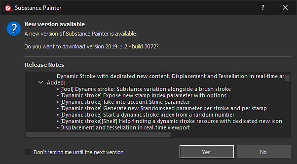

The update window indicates if a new version of the application is available and display as well the latest Release notes.
This window automatically appears during startup if a new version is available to download. To manually check for updates use Check for updates in the Help menu.
It is possible to avoid displaying this window during the startup with the following methods: